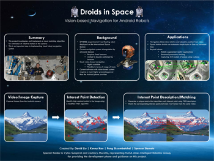

droids in space (4/2012 - 6/2012)
My team worked with NASA to investigate and implement a visual matching algorithm
for estimation of relative motion of the camera. This is an importent step to implementing visual robot
navigation system for NASA robots in space stations. For more information, click on the poster on the right or check out our source code on github! |
 |
youmote (1/2012 - 3/2012)
kinect gesture recognizer (1/2012)
nom (10/2011 - 12/2011)
| description |
 |
music genre classification (10/2011 - 12/2011)
| description |
 |
opower (6/2011 - 9/2011)
facebook (6/2010 - 9/2010)
hewlett-packard (6/2009 - 8/2009)
| description |
 |